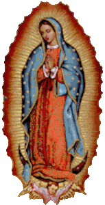

Oração a Nossa Senhora de Guadalupe
Perfeita, sempre Virgem Santa Maria,
Mãe do Verdadeiro Deus, por quem se vive.
Tu que na verdade és nossa Mãe Compassiva,
te buscamos e te clamamos.
Cura nossas penas, nossas misérias e dores.
Tu que és nossa doce e amorosa Mãe,
acolhe-nos no aconchego do teu manto,
no carinho de teus braços.Que nada nos aflija nem perturbe nosso coração.
Mostra-nos e manifesta-nos a teu amado Filho,
para que Nele e com Ele encontremos
nossa salvação e a salvação do mundo.
Santíssima Virgem Maria de Guadalupe,
Faz-nos mensageiros teus,
mensageiros da Palavra e da vontade de Deus.
Amém.
Nossa Senhora de Guadalupe rogai por nós !
Em nome do Pai, do Filho e do Espírito Santo. Amém.
Ato de Contrição
Nossa Senhora de Guadalupe,
Mãe de Deus e Imperatriz da América,
aos Seus pés e
diante de Seu infinito Amor,
acolhidos em Seu Santuário,
rogamos pela Sua interseção
e presença em nossa vida.
Estende Seu Manto Sagrado sobre nós,
guiando nossas condutas
e decisões
para que jamais sejamos afetados
pelos males do Pecado;
Conduz os fiéis na direção do Amor, da Fraternidade e do Respeito;
Guia a Igreja e todos os Seus filhos que suplicam pela Paz e a Unidade
ao caminho da
Misericórdia e da Luz que não se apaga.
Tudo isso vos pedimos, Mãe Santíssima de Guadalupe,
com esperança e confiança no Seu auxílio.
Rogai por nós, doce Virgem Imaculada,
para que sejamos dignos das promessas de Cristo.
Amém.
Oração de todos os dias
Nossa Senhora de Guadalupe,
Mãe de Deus e Imperatriz da América,
aos Seus pés e diante de Seu infinito Amor,
acolhidos em Seu Santuário,
rogamos pela Sua interseção
e presença em nossa vida.
Estende Seu Manto Sagrado sobre nós,
guiando nossas condutas e decisões
para que jamais sejamos afetados
pelos males do Pecado;
Conduz os fiéis na direção do Amor, da Fraternidade e do Respeito;
Guia a Igreja
e todos os Seus filhos que suplicam pela Paz e a Unidade
ao caminho da Misericórdia
e da Luz que não se apaga.
Tudo isso vos pedimos, Mãe Santíssima de Guadalupe,
com esperança e confiança no Seu auxílio.
Rogai por nós, doce Virgem Imaculada, para que sejamos dignos das promessas de Cristo.
Oração do dia
Primeiro dia:
Ó Deus, Pai Misericordioso que Reina no Céu e na Terra,
quando eu olho para o Trono da Tua Grandeza, posso Vê-lo coroar Nossa Senhora,
a Maior de todas as criaturas depois de Ti. Mãe de Deus e também minha Mãe.
Mostraste a partir do Monte Tepeyac o quão amorosa é a Mãe que temos,
ensinando-nos a amá-la, rogando pela Sua proteção.
Mais que isso,
fizeste-nos enxergar Seu sofrimento ao testemunhar a dor atroz de Jesus na Cruz,
em agonia de morte. Instruíste-nos a olhá-La como Mãe, ainda que não merecêssemos.
Revelaste a nós o Seu Amor materno, compassivo e misericordioso, defensor de todos os pecadores.
Pai Nosso, Ave-Maria e Glória.
Segundo dia:
Ó Deus, Pai Misericordioso que Reina no Céu e na Terra e que nos apresentaste à Virgem de Guadalupe,
cremos e acolhemos Nossa Senhora como Advogada dos pecadores diante de Seu Julgamento.
Ela que, com Suas adoráveis mãos, não cessa de nos abençoar, orando e intercedendo a nosso favor.
Toda a honra e toda a glória sejam dadas à Rainha dos anjos e dos homens,
a quem agradecemos por abastecer nosso coração com os preciosos dons da caridade,
da humildade e da obediência aos Teus Mandamentos.
Pai Nosso, Ave-Maria e Glória.
Terceiro dia:
Ó Deus, Pai Misericordioso que Reina no Céu e na Terra,
revelaste-nos Nossa Senhora de Guadalupe, envolta pelos raios do sol, em Luz de Graça e Santidade.
Arrebataste nosso coração, enchendo-nos de felicidade.
Reunidos, oramos em humilde agradecimento pela Mãe que nos deste e que nos ensina
a Te amar além de todas as coisas, bem como amá-la e amar nossos irmãos e irmãs,
os reconhecendo como filhos Teus.
Pai Nosso, Ave-Maria e Glória.
Quarto dia:
Ó Deus, Pai Misericordioso que Reina no Céu e na Terra, iluminaste o nosso caminho e enriqueceste
o nosso espírito revelando a Verdade
sobre todas as coisas. Através de Guadalupe,
mostraste o poder e a glória da Virgem Santíssima, a quem os próprios anjos prestam reverência.
Pois o que devo eu, então, fazer para glorificar Nossa Mãe? Já não ofereço a minha cabeça ou os meus braços,
mas entrego o meu coração e a minha alma à Senhora de todos os
povos, a fim de ser plantado(a) e regado(a)
por Ela no jardim da Eternidade.
Pai Nosso, Ave-Maria e Glória.
Quinto dia:
Ó Deus, Pai Misericordioso que Reina no Céu e na Terra, indicaste-nos o Manto Sagrado da Virgem de Guadalupe,
incomparável sob um dossel de estrelas; Combinaste a pureza com a humildade e reproduziste a mais bela de todas as mães,
que nos mantém absortos diante de Seu Amor.
Meus olhos e meu coração fixam em Ti, Rainha do Céu, que revelaste a todos os Seus filhos o poder da caridade e do amor a Deus.
Pai Nosso, Ave-Maria e Glória.
Sexto dia:
Ó Deus, Pai Misericordioso que Reina no Céu e na Terra, permitiste que, por intermédio de Nossa Senhora de Guadalupe,
encontrássemos o caminho da Verdade e da Vida.
Em nossa Mãe reconhecemos os Seus propósitos e virtudes, renegando as vaidades deste mundo e os vícios e instabilidades dos nossos atos.
Pai Nosso, Ave-Maria e Glória.
Sétimo dia:
Ó Deus, Pai Misericordioso que Reina no Céu e na Terra, abriste os nossos olhos para a perfeição de Nossa Senhora de Guadalupe que,
humilde, apareceu a Juan Diego e não desdenhou de sua pobre tilma, estampando nela o Seu rosto incomparável.
Pedimos, pois, ó Pai, para que através da Virgem Imaculada, sustente-nos com Seu amor e ensine-nos a prática da caridade e da humildade.
Pai Nosso, Ave-Maria e Glória.
Oitavo dia:
Ó Deus, Pai Misericordioso que Reina no Céu e na Terra, caminhaste junto da Virgem de Guadalupe e concedeste
a Ela um Manto Glorioso, enriquecido pela caridade presente em Sua bênção maternal.
Concedei-nos a graça de experimentar a compaixão da Imperatriz da América, próximos de Seu coração Imaculado,
e permite-nos sentir a Misericórdia e a Compaixão de Nossa Mãe.
Pai Nosso, Ave-Maria e Glória.
Nono dia:
Ó Deus, Pai Misericordioso que Reina no Céu e na Terra, deste a Nossa Senhora de Guadalupe todos os dons maternos
para a proteção de Seus filhos.
Agora, o que não poderá ser alcançado através da interseção da Virgem Santíssima?
Nenhum obstáculo pôde cessar a milagrosa aparição de Guadalupe. Também assim, nada pode ofuscar o brilho de Nossa Senhora,
Mãe de toda a
humanidade e advogada dos pecadores!
Mãe Santíssima, vos pedimos: abre os Seus braços maternais sobre nós e acolhe nossas súplicas; Mostra-nos Sua Compaixão infinita
e
conduz-nos ao Perdão e o Amor de Deus.
Pai Nosso, Ave-Maria e Glória.